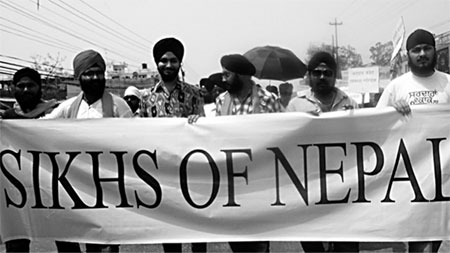
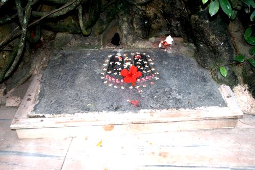

सर्वप्रथम सिख धर्मका प्रथम गुरु श्री गुरु नानक देव ज्यू महाराज विक्रम संवत १५७३ तिर नेपालमा आउनु भएको थियो । उहाँले आफ्नो पावन चरणले यस सुन्दर देशको धर्तीलाई पवित्र बनाउनु भयो र यस देशलाई शान्ति र सफलताको आशिष दिएर जानु भयो । त्यस कारणले पनि सिख समुदायको लागि यो देश, यो पवित्र भुमि तीर्थस्थलको रुपमा छ र अति महत्वपुर्ण र त्यति नै प्रिय पनि छ ।
त्यस पछि नेपाललाई शत्रुहरुको आक्रमणबाट जोगाउन भारतबाट ३०० सिख घुडसवार सैनिकहरु आएर केही महिना नेपालको रक्षाको लागि बसेका थिए भन्ने कुरा एउटा अभिलेखमा उल्लेख भएको पाइन्छ ।
भारतको पंजाबमा महाराजा रंजीत सिंहको शासनकालमा अंग्रेजहरुले आक्रमण गर्दा उहाँकी श्रीमती महारानी जिन्द कौर आफ्ना सेवक, सल्लाहकार तथा रक्षकहरुलाई लिएर पश्चिम नेपालबाट नेपाल प्रवेश गरेको केही पुस्तकहरुमा उल्लेख गरिएको पाइएको छ । त्यही समय देखि नेपालमा सिख समुदायको प्रवेश र बसोबास शुरु भएको बुझिन्छ । त्यसै कारणले नेपालको पश्चिमाञ्चलमा रैथाने सिख समुदायको बाक्लो बसोबास देखिएको हो । त्यहाका सिख समुदाय खास गरि खेति–किसानी, जमिन्दारी, व्यापार, उधोग–धन्दा तथा सरकारी जागिरमा समेत कार्यरत छन् । यहाँ सिख्खनपुरवा, बनकटवा र जमुनाहामा पुरै यिनीहरु कै बसोबास छ ।
 त्यस पछि मध्यनेपालमा करिब ६० बर्ष अधिदेखि व्यापारको सिलसिलामा यस समुदायको प्रवेश शुरु भयो । त्यस बेला नेपालमा यातायातका आधुनिक साधन भन्ने थिदै थिएन । भूपरिवेष्ठीत त्यसमा पनि एउटा गरिब राष्ट्र भएकाले जल, थल तथा वायुमार्ग कुनै पनि यातायातका साधनहरुको त के कुरा सामान्य बाटो घाटो का समेत व्यवस्था थिएन । यस्तो जड परिस्थितिबाट सिख समुदाय द्धारा नै नेपालमा बाटो घाटोको समेत निर्माण गरि भारतबाट बस तथा ट्रक झिकाई सडक यातायात सञ्चालन गरिएको हो । तत्पश्चात विस्तारै बाटो घाटोको पनि विस्तार शुरु हुँदै गयो । यातायातका साधनका साथै यस संग सम्बन्धित प्रविधि र प्राविधिक जनशक्तिहरु पनि सिख समुदायबाट नै उत्पादन गरिएका हुन । वास्तवमा भन्ने हो भने आदीम कालीन नेपाललाई जुनवेला कुनै वस्तुलाई एक ठाँउबाट अर्को ठाँउमा लैजानु पर्दा भरिया बाहेक अरु विकल्प थिएन । कसैलाई एक ठाँउ बाट गन्तव्य सम्म पुग्नु पर्दा हिडेर जानु बाहेक अन्य उपाय थिएन । त्यस्तो अवस्थाबाट विकास र आधुनिकताको छनक सिख समुदायलेनै नेपालीहरुलाई दिएका हुन भन्दा अतिश्योक्ति नहोला । यातायात क्षेत्रमा विशेष योगदान पुर्याएको भए तापनि यस बाहेक अन्य क्षेत्रहरुमा पनि सेवा प्रदान गरि सिख समुदायले नेपालको विकासमा योगदान पुर्याउदै आइरहेका छन । व्यापारको क्षेत्रमा पारचुन्का विभिन्न दैनिक उपभोग्य सामानहरु देखि लिएर भारतबाट कोकाकोला भिकाई नेपालमा बिरगंज तथा हेटौंडामा पेय–पदार्थको व्यापारको शुरुवात समेत गरेका थिए । यसका साथै भारतीय पर्यटकहरुलाई नेपालमा भारतीय परिकारहरु पस्किन बिरगंज तथा हेटौंडामा शेरे पञ्जाब होटल जस्ता संस्थागत होटलहरु देखि विभिन्न पञ्जावी ढावाहरु सम्म सञ्चालन गरेर नेपालको पर्यटन व्यवसायलाई टेवा दिए ।
यस प्रकार नेपालका दुर्गम भेग देखि सुगम क्षेत्र सम्म र सुदुर पश्चिम देखि मध्यमाञ्चल हुँदै पूर्वि भाग सम्म आफ्नो लगन परिश्रम र इमान्दारीताले विभिन्न आरोह अवरोह पार गर्दै सबै नेपालीहरुको काँधमा काँध मिलाउदै सिख समुदायहरु प्नि नेपालको सर्वाङ्गिण विकासमा लागि परिरहेका छन् ।
यिनीहरुको पुरुष पहिरन नेपाली दौरा सुरुवाल जस्तै छ र शिरमा ५–७ मिटरको फेटा जसलाई पगडी भनिन्छ लाउने गर्छन् । महिलाहरुले कुर्ता र पाइजामा (सुरुवाल) लगाउने गर्छन् र गलामा सल ओढने गर्छन् । सिखहरुले लगाउने पगडी विश्वप्रख्यात छ । यसलाई सबै देशहरुले मान्यता दिएको छ । त्यसैले पगडी लगाउने लाई मोटर साईकल चलाउदा हेलमेट लगाउनु पर्दैन र नेपाल जस्तो देश जहाँको राष्ट्रिय पोशाकमा ढाका टोपी अनिवार्य छ, त्यसैगरी पगडीलाईपनि त्यतिकै सम्मान र मान्यता दिइएको छ ।
खानपिनको क्षेत्रमा पनि पञ्जावी परिकार विश्व प्रसिद्ध छ । खानपिनका पारखी सिखहरु तन्दुरी रोटी दाल फ्राई, चना, राजमाका परिकार, तन्दुरी चिकेन, रोस्ट, मकैको रोटीसंग तोरीको साग, दुध, दही, घ्यू, मख्खन, लस्सी, मठ्ठा, मोही खान सौखिन छन् । सिख समुदाय संग सबैले अनुकरण गर्न योग्य एउटा खास विशेषता छ । सिख समुदायले बंसानुगत रुपमै तम्बाकु जन्य वस्तुको सेवन गर्दैनन् । यस्ता खाले विशेषताहरु बहुत कम समुदायमा पाइन्छ ।
धेरै मेहनतिलो समुदाय भएको कारणले फुर्सतको क्षणमा वा पारिवारिक जमघट र चाडपर्वहरुमा यिनीहरु नाचगानमा रमाउन मन पराउछन् । सिख पुरुषहरुले नाच्ने भाँगडा नाच धेरै प्रख्यात पनि छ । महिलाहरुले नाच्ने नाचलाई भने गिद्दा नाच भनिन्छ । यिनीहरुको गीत तथा संगीत पनि सुन्दै नाचुनाचु लाग्ने खालको छ ।
सिखहरुको रुप अरु समुदायको भन्दा पृथक देखिन्छ । सबै सिखहरुले शिरमा पगडी र बाक्लो दाढी जुङ्गा पाल्ने हुनाले यिनीहरुलाई टाढैबाट चिन्न सकिन्छ । धार्मिक रीत अनुसार सिखहरु पाँच कंकारले सुसज्जित हुन्छन । १. केस, २. कंघा (काइयो), ३. कडा (बाला), ४. किरपान (सानो तरवार), ५. कच्छेरा (लामो खालको कट्टु) । पाँच कंकारको सबैको आ–आफ्नै महत्व छ । केस, डाढी र जुङ्गालाई कहिल्यै नकाटी सर्वोपरी मानेर आजीवन पाली राख्ने । काईयोको मदतले पालिएको केस, दाढी र जुङ्गाको स्याहार गर्ने । फलामको कडा दाहिने हातमा सधै लगाई राख्ने यसले सिखहरुलाई गुरुजीको सम्झना सदैव गराई राख्छ र नराम्रो काम गर्न बाट जोगाउँछ । किरपान भनेको कृपा गर्नु हो । आफ्नो धर्म र देशको रक्षा गर्न आवश्यक परेको बेला शत्रुहरुलाई परास्त गर्न यो सदैव साथमा राखिन्छ । साथै अत्याचारी र उत्च्छृङ्खल तत्वहरुबाट अरुलाई बचाउन र मद्दत गर्न या कृपा गर्न मात्र यसको प्रयोग गरिन्छ ।
कच्हेरा भनेको लामो घुडा सम्म छोपिने कट्टु हो । यसलाई घर परिवामा आफ्नो लाज ढाक्न लगाईन्छ ।
सिखहरु एक ओंकार अकाल पुरुष निरंकारलाई मान्छन र गुरुहरु, संत, महंत, विद्वान, शहीद तथा बहादुरहरुको सम्मान गर्छन । तर पुजा पाठ, उत्सव चाही अकालको मात्र गर्छन ।
 हिन्दुहरुको मन्दिर, मुस्लिमहरुको मस्जिद र क्रिश्चियन धर्मावलम्बीहरुको चर्च भने जस्तै, सिखहरुको धार्मिक स्थललाई गुरुद्वारा भनिन्छ । त्यहाँ आई गुरु श्री गुरुग्रंथ साहेब ज्यूलाई प्रतिकात्मत ढंगले राखिएको हुन्छ । जहाँ सबै सिख धर्मावलम्बीहरुले आदरका साथ माथा टेक्छन् । माथा टेक्नको लागि टाउकोलाई कपडाले ढाक्नु अनिवार्य हुन्छ । आदि गुरु श्री गुरुग्रंथ साहेब ज्यूलाई यिनीहरुले जीवित गुरु सरहनै मानेर पुजा पाठ किर्तन गर्छन् र सम्मान गर्छन । सिखहरुको जन्मदेखि मरण सम्म सबै धार्मिक, सामाजिक, क्रियाहरु गुरुद्वारामा गुरुग्रंथ साहेब ज्यूको सामुन्ने नै गर्ने चलन छ । आदि गुरु श्री गुरुग्रंथ साहेब ज्यूमा १४३० अंग छन् । यस ग्रंथमा छः गुरु ११ भट्ट ४ गुरु सिख १५ महापुरुषहरुको वाणीहरु समाहित छन् । नेपालको अधिकांश शहरहरुमा गुरुद्वाराको निर्माण भइसकेको छ ।
माथी उल्लेख गरिए अनुसारका यी वीर सिख समुदायको अवस्था भने नेपालमा दिनानुदिन खस्किदो अवस्थामा छ । अझ भन्नु पर्दा यिनीहरु लोपोन्मुख अवस्थामा पुगिसकेका छन् । यिनीहरुको संरक्षण र समुचित विकासका लागि नेपाल सरकारको तर्फबाट कुनै योजना ल्याउनु त परै जाओस् झन अझ हतोत्साहितनै गरिएको पाइएको छ । के एउटा प्रजातन्त्रोन्मुख देशमा एउटा अल्प संख्यक समुदायलाई राज्यको तर्फबाट सक्दो सहयोग र सुविधा उपलब्ध गराउनुको सट्टा उनीहरुलाई आवश्यक सुविधाबाट समेत बञ्चित गराएर हतोत्साहित गर्दा देशको समग्र विकासमा टेवा पुग्ला र देशमा सानोसानो समुदायका चाँड पर्व, धार्मिक अवसरहरुलाई राष्ट्रले सम्बोधन गरिसकेको अवस्थामा समेत सिख समुदायको कुनै पनि अवसरलाई राष्ट्रले नसम्झिनु आम नेपाली सरह नागरिकता उपलब्ध नगराउनु अन्य पिछडिएका र अल्पसंख्यक समुदायलाई जस्तो कुनैपनि क्षेत्रमा आरक्षणको व्यवस्था नगरिनु । परम्परागत पेशामा सहयोग नपुर्याउनु, रोजगारीका व्यवस्था नगर्नु सिख समुदायलाई सरकारको तर्फबाट राष्ट्र निर्माणको मूलधार बाट अलग्याउने कोशिश होइन र देशका योजनाकारहरुले यस कुरामा पनि ध्यान पुर्याउनु अति आवश्यक छ ।
अन्तमा म सबै देशवासीहरुलाई अपिल गर्न चाहन्छु कि हामी मध्ये कोही कहाँबाट आएको होलाउँ कोही कहाँबाट तर जहाँबाट आएर बसोबास गरेको भएतापनि यो भूमि कसैको जन्मभूमि होला या कसैको कर्मभूमि आज हामी मात्र नेपाली हौ । यो आकाश, यो धर्ति यहाँको प्रकृति, हावा, पानी, रुख,हिमाल, पहाड, तराई जहाँ हामी स्वच्छन्द भएर बाचिरहेका छौं । हामीले यसैको लागि बाच्नु पर्छ र यसैको लागि मर्नु पर्छ ।
माथिको लेख तपाईंले English भाषामा पनि पढ्न सक्नु हुन्छ। कृपया यहाँ क्लिक गर्नुहोस्। तपाईंको प्रतिकृयालाई हामी स्वागत गर्ने छौ। धन्यवाद।